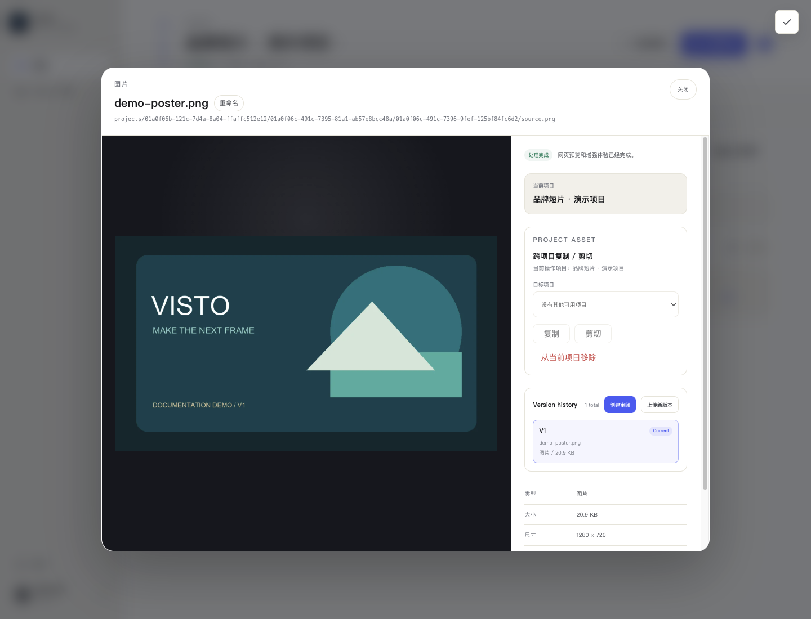

文档首页/审阅与交付
版本管理与新一轮修订
版本历史让你保留原始审阅上下文。修订同一作品时，从原资产的“上传新版本”进入，而不是把修订文件上传成另一个没有关联的资产。


上传新版
- 进入项目媒体，打开原资产详情。
- 在
Version history区域选择“上传新版本”。 - 选修订文件，等待上传和处理完成。
- 确认历史出现 V2 / 下一版本，检查画面和文件信息。
- 核对
Current标记；需要调整时使用页面支持的当前版本切换操作。 - 明确选择新版本，再点“创建审阅”开始下一轮。
选择某一历史版本用于预览，与把它设为资产当前版本是两种操作。仅点开 V1 看画面，不应默认认为当前版本已切换到 V1。
旧评论会怎样
旧审阅与其评论仍属于原先引用的版本。把 V2 上传到资产并不自动把 V1 的审阅换成 V2。客户从旧链接看到旧版时，先检查分享对应的审阅清单；为新版建立新审阅并发送正确链接。
修订说明怎么写
可以在审阅名称和评论中注明改动范围：“V2：调整 00:12–00:18 节奏，修改片尾文案，其他镜头保持。”接收者容易确认改动，你也能追踪哪条反馈已落实。
完成检查： 版本编号正确、预览正确、当前版本明确、下一轮审阅确实引用新版。